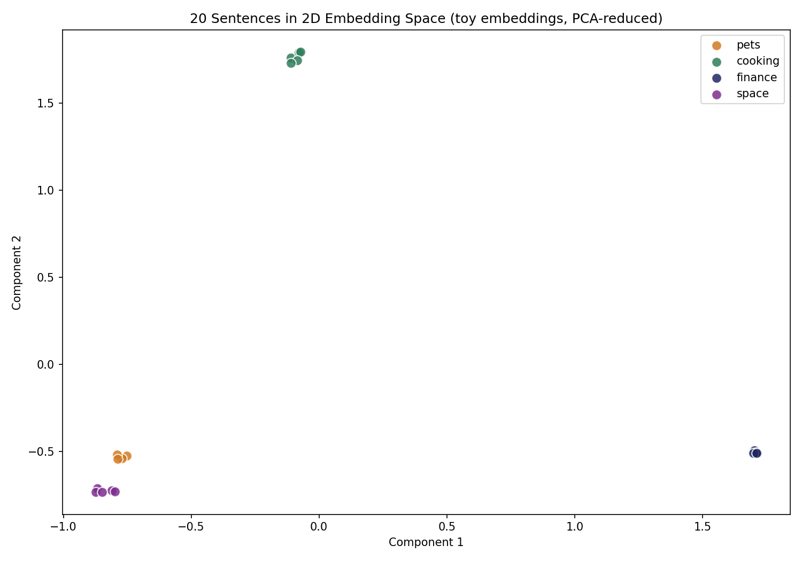

Exercise: Visualize Embeddings of 20 Sentences in 2D
Turn 20 real sentences into embedding vectors, reduce them to 2D, and plot them — so you can directly see sentences with similar meaning cluster together, exactly like the lesson described. No API key, no internet access needed — the toy embedding you'll build is fully transparent, plain Python plus a few common libraries.
numpy, scikit-learn,
and matplotlib installed: run
pip install numpy scikit-learn matplotlib. Then download
starter.py below and run it from a terminal with
python3 starter.py. It prints a vocabulary size, a vector
matrix shape, cosine-similarity sanity checks, and saves a plot to
embeddings_plot.png.
The task
Open starter.py. It gives you 20 sentences across four
topics (pets, cooking, finance, space), a hand-seeded vocabulary of
"concept anchor" words for each topic, and the plotting/dimensionality
reduction code already wired up. You fill in two functions.
1 Build the hybrid embedding vectors
Fill in build_concept_vectors(). For each sentence: (a) count how many of its words appear in each topic's seed list — a 4-number "seed score" — and L2-normalize it; (b) build the sentence's raw word-count vector across the full vocabulary and L2-normalize it the same way; (c) concatenate the two with np.hstack, weighting the seed score by 2.0 and the word counts by 1.0, so topic identity dominates while each sentence keeps its own specific variation.
2 Implement cosine similarity
Fill in cosine_similarity() using the exact formula from the lesson: (A · B) / (|A| × |B|). The dot product, divided by the product of each vector's Euclidean norm. Guard the zero-vector edge case — if either vector's length is 0, return 0.0 instead of dividing by zero.
Core path
Get the script running end-to-end. Open embeddings_plot.png
and check: do the four topics visually separate into roughly distinct
regions of the plot, even though nothing in your code ever told it which
topic each sentence belonged to?
Example output
A correct run produces something like this — four loosely separated color-coded clusters, one per topic. Your own plot's exact layout will differ (PCA is sensitive to the input vectors), but the same rough separation should appear:

🐞 Common bug — forgetting to guard the zero-vector case
If a sentence happens to score zero on every seed word AND has words entirely outside the vocabulary passed in (shouldn't normally happen here, but is a real edge case any embedding pipeline has to handle), its vector's norm is 0. Dividing by that norm without a guard crashes with a ZeroDivisionError or silently produces NaN values that quietly corrupt the whole plot. This is exactly why the TODO instructions call out checking norm_a == 0 or norm_b == 0 before dividing — a real production embedding pipeline hits this exact edge case with empty documents or documents in an unsupported language.
Ready for more?
Once your plot shows four separated clusters, head to the Pro path project: rebuild the same 20 sentences using only raw word counts, no concept-anchor scores at all, and watch the clustering largely disappear — a direct, hands-on demonstration of why real embedding models don't need hand-seeded topic lists.
solution.py; it's implementing the
formula correctly and being able to explain, in your own words, why
same-topic pairs score higher than cross-topic pairs. Compare your
reasoning against solution.py (run it with
python3 solution.py) once you've made a genuine attempt.